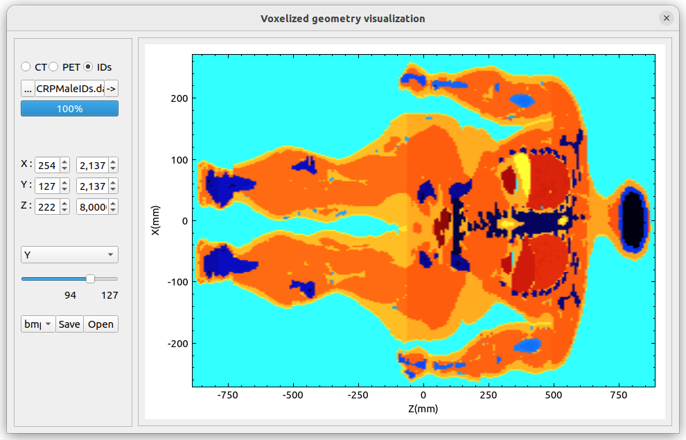
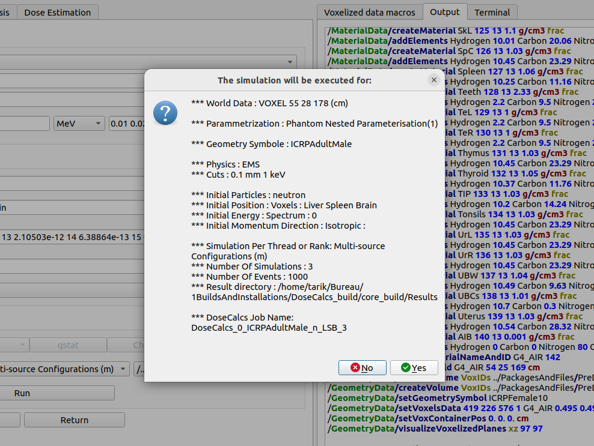

DoseCalcs-Gui: Graphical User Interface
In this section, we will introduce how to use the GUI component to investigate the DoseCalcs-Core (geant4-based code) for internal dosimetry simulations. This package was developed to facilitate the use of DoseCalcs code by providing a platform that contains:
DoseCalcs input fields (line edit, list of choices, etc.) with an input validation system to avoid user error entry;
Text editor to manipulate the macro files and external files;
Terminal to run commands;
Installation windows to get and install the prerequisites of DoseCalcs code such as CMAKE, GEANT4, ROOT, MPI, and DCMTK;
Visualization window to read the geometry macros from the input file and visualize the geometry (voxelized, DICOM, GDML, TEXT, and C++ geometry);
In addition to running DoseCalcs in the GUI Terminal, there is an interface to run multithreading, or MPI, on the CentOS Rocks cluster.
DoseCalcs Package
When the user download the DoseCalcs package and unpack it under Ubuntu, the DoseCalcs directory should contain three sub-directories and the DoseCalcs.pro file:
core: contains the source and header files of DoseCalcs-Core.
gui: contains the source, header, “.ui”, and resources files of the Qt5 C++ DoseCalcs-Gui.
PackagesAndFiles: It will be used to held the installed prerequisite packages using the DoseCalcs-Gui. Also, it contains the following:
[Config] file, which is used by the DoseCalcs-Gui application to get and fill the default inputs such as the default [macros] file, CMAKE “bin” directory path, Geant4 install “bin” directory path, ROOT install “bin” directory path, MPI install “bin” directory path, DCMTK install directory path, and DoseCalcs-Core source directory path. An example of a [Config] file is given in (ConfigFile).
[ICRPDATA] directory, which contains files from ICRP Publications 107, such as torgans_2016-08-12.NDX, sregions_2016-08-12.NDX, rcp-am_photon_2016-08-12.SAF, rcp-am_neutron_2016-08-12.SAF, rcp-am_electron_2016-08-12.SAF, rcp-am_alpha_2016-08-12.SAF, rcp-af_photon_2016-08-12.SAF, rcp-af_neutron_2016-08-12.SAF, rcp-af_electron_2016-08-12.SAF, and rcp-af_alpha_2016-08-12.SAF; and ICRP Publication 133 files such as ICRP-07.RAD, ICRP-07.NSF, ICRP-07.NDX, ICRP-07.BET, and ICRP-07.ACK.
[PreDefinedGeometry] directory, which contains several [macros] files and the corresponding geometry files. These files are used when the user would use a geometry from this provided list, which covers all DoseCalcs geometry methods.
The [ICRPDATA] and [PreDefinedGeometry] do not come with DoseCalcs-Gui package, they can be downloaded from (Download ICRPDATA and PreDefinedGeometry Zip file.) in the form of a zip file (DoseCalcsSupplementary.tar.xz), then unzipped in the PackagesAndFiles directory before building the DoseCalcs-Gui package. Or you can just click on “Download DoseCalcs Supplementary Files” button in DoseCalcs-Gui Installations window, and the ICRPDATA and PreDefinedGeometry will be downloaded and added to PackagesAndFiles directory in the DoseCalcs-Gui build directory.
Installing the DoseCalcs-Gui component
Package Requirements
Compiler, Qt5, xterm, scp
Qt5 packages and xterm are required to install DoseCalcs-Gui. If the user will install DoseCalcs on Rocks-Cluster, it should be noted that to get the results from the cluster to the personal computer by DoseCalcs, it is recommended to install scp. The following command will install all the DoseCalcs-Gui requirements:
$ sudo apt-get install -y build-essential qtbase5-dev qtchooser qt5-qmake qtbase5-dev-tools libqt5charts5-dev qttools5-dev xterm openssh-client openssh-server
On CentOs, you can use “yum”.
$ sudo yum install -y build-essential qtbase5-dev qtchooser qt5-qmake qtbase5-dev-tools libqt5charts5-dev qttools5-dev xterm openssh-clients openssh
DoseCalcs-Gui Installation
After having installed the prerequisite packages, download DoseCalcs from: https://codeload.github.com/TarikEl/DoseCalcs-Gui/zip/refs/heads/main
Unpack the DoseCalcs source package “DoseCalcs.XX.tar.gz” to a location of your choice. For illustration only, this guide will assume it’s been unpacked in a directory named, for example, /home/User/Desktop, so that the DoseCalcs source package sits in a subdirectory (DoseCalcs.XX means the version of DoseCalcs). The unpacked source is now in /home/User/Desktop/DoseCalcs.XX
$ cd /home/User/Desktop $ mkdir DoseCalcs_install $ cd /home/User/Desktop/DoseCalcs_install $ qmake /home/User/Desktop/DoseCalcs.XX/DoseCalcs.pro
Now, to run the DoseCalcs-Gui application, from terminal /home/User/Desktop/DoseCalcs_install, run:
$ export QT_QPA_PLATFORM=xcb $ ./DoseCalcs
Installation window and DoseCalcs-Core component Installing
After installing and running DoseCalcs-Gui, DoseCalcs-Core is ready for installation by using the installation window as illustrated below:
The “Installations” window can be opened from menu items or from the menubar. Follow the next steps:
Install the DoseCalcs-Core package requirement (the packages CMAKE, Prerequisites, and Geant4 are essentials) by clicking first on the “Installations” button, which shows the list of packages to be installed. For each package, click on “Generate”, The installation commands will be generated automatically in the “Input” text field, and the user can modify and add other commands. Then, click on “Save” below the “Input” text field. Finally, the “Install” button will execute the installation commands saved for that package in “Terminal”, Follow “Terminal” if an inout is required to continue the installation;
Choose the DoseCalcs-Core directory, which is in the DoseCalcs downloaded source directory (i.e., ../../DoseCalcs/core), check configurations (checkbox) and library paths (Geant4 and CMAKE are required; other packages such as DCMTK, MPI, and ROOT are used if the user checked their checkbox for the building process) that will be considered in the building process;
Click on the “Generate” button to generate the building CMAKE command. You can edit the text of the commands shown in the “Input” field and save the generated command by clicking on “Save” below the “Input” text field.
Click on the “Build” button to build the DoseCalcs-Core, and the building process output will be shown in the “Terminal” field.
Click on “Download DoseCalcs Supplementary Files” to download the ICRPDATA and PreDefinedGeometry files to the PackagesAndFiles directory. These files are used in simulation inputs if the user will use the pre-defined DoseCalcs geometries and ICRP radiation data files for the radiation source.
Don’t forget to click on “Check Paths” at the top of the “Installations” window to check what packages are installed and are known by DoseCalcs-Gui, which are the library paths used in the DoseCalcs-Core building process and also will be used in the simulation process. After checking, save these paths to the [Config] file (/../DoseCalcs_install/PackagesAndFiles/Config) by clicking on the “Save Data To Config File” button. Then you can use the same configuration each time you want to re-build DoseCalcs-Core.
[Config] file and default inputs
The [Config] file is manipulated by the installation window. The input fields can be saved to the [Config] file by clicking on the “Save Data To Config File” button and loaded by clicking on “Load Config Data”. Also, you can edit the [Config] file by clicking on “Edit Config File”, then edit the text in the “Input” field, and click on “Save”.
If the current package directory paths in the [Config] file are not found, the default paths will be: cmake : /usr/bin. geant4 : /usr/local/bin root : /usr/local/bin dcmtk : /usr/local/bin mpich : /usr/local/bin default DoseCalcs source directory : /usr/local/bin
The user default path of the [macros] file can be set by clicking on the “Default DoseCalcs Inputs” button, choosing the file path, and clicking on the “Save Data To Config File” button. The default macros file path is: /usr/local/bin. Also, the user should check the latest package download link and update it in the [Config] file.
After Installations
Now we have installed DoseCalcs-Gui; also, the prerequired packages and DoseCalcs-Core are installed, and DoseCalcs supplementary files were downloaded. The directory tree in DoseCalcs_install should be:
/../DoseCalcs_install/DoseCalcs : executable to be used to run DoseCalcs-Gui “./DoseCalcs”. /../DoseCalcs_install/core_build : Here we found DoseCalcs-Core installed executables such as [simulate], [merge], and [analysis]; also, the DoseCalcs-Core results directory, and all generated macro files of simulations, etc. /../DoseCalcs_install/PackagesAndFiles : contains all installed package directories (Geant4_install, cmake_install, etc.), the [Config] file, and the downloaded files ICRPDATA and PreDefinedGeometry.
The user can investigate the terminal to reach any of these directories and manipulate any file, especially the core_build that contains macro files of previous simulations, and the result files that will be saved from DoseCalcs by default in the directory “/../DoseCalcs/core_build/Results”.
In addition to this instructions, the input components in DoseCalcs-Gui (checkboxes, buttons, lists of choices, and input text fields) are supported by tooltips when the cursor passes through them in order to give the necessary information and message about how to fill that input component. Also, when filling in the input components, the entered values can be checked and verified before being used in simulation.
Run a simulation
In the “Main window”, we use a pre-defined geometry from a provided list in the “Geometry” tab, the geometry, physics, and radiation source components will be filled by the read inputs; add run configuration; and then click on the “Run” button. Now the “Terminal” is the interface between the DoseCalcs-Gui and DoseCalcs-Core outputs. Now, all generated files will be in “/../DoseCalcs_install/core_build”, such as:
macros file generated automatically by the “Run” button, which begins with “Macros_…” followed by simulation ID and simulation input indications. This file contains parameters given in the GUI components.
simulation output file’s name begins with the word: “nohup_…” (in case we run simulation in the background) or “DoseCalcs_…” (in case we run simulation on Rocks-Cluster), this word is followed by the simulation ID and principal simulation parameters. This file contains DoseCalcs-Core outputs. In case the user runs simulation without “Run In Background” and “Use On Rocks” conditions, the simulation outputs will be shown simultaneously on “Terminal” after clicking on the “Run” button. You can cancel the run by clicking Ctrl+C in “Terminal”.
When you run a simulation, the “Terminal” will automatically be in the “/../DoseCalcs_install/core_build” workspace, and you can view all the output in this file by “cat nohup_…” or simultaniously by “tail -f nohup_…”.
simulation-run result files, are generated by DoseCalcs-Core by default in “/../DoseCalcs_install/core_build/Results”. The file’s name begins with the word: “AE@…”, this word is followed by the compute-unit ID and principal simulation parameters. These files should be merged by clicking on the “Merge Results” button in the “Score, Merge, ROOT Analysis” tab according to the user-added score inputs. The merging execution will be shown on “Terminal”, and the [ResultsData] file-generated can be viewed on the “Input” tab by clicking on the “View Results” button in the “Score, Merge, ROOT Analysis” tab or in “Terminal” by “cat /../DoseCalcs_install/core_build/Results/ResultsData”.
Main window
It is known that DoseCalcs-Core uses inputs from the [macros] file, which contains text commands. The main window is dedicated to contain two frames; the left frame contains four GUI input tabs (“Geometry”, “Physics, Source, Run”, “Score, Merge, ROOT analysis”, and “Nuclear Medicine Dosimetry”). The right frame contains the output fields (three tabs: “Input”, “Output” and “Terminal”), including: [Macros] text edit that shows the text commands generated by the input tab components (these commands can be edited and saved); “File” text edit that can be used to edit any other required file such as GDML, TEXT, and C++ geometry files; “Output” text edit that shows the message of reading files, paths, content of generated files, etc. “Terminal” is used to run and show the simulation outputs.
Several menu items in the menubar can be investigated, such as:
Open: Open a file chooser to choose a [macros] file and read it, to fill the GUI components.
Save Inputs: Save inputs of GUI components to a [macros] file.
Save Inputs to Default File: Save inputs of GUI components to the default macros file.
Check: Check the simulation inputs entered in GUI components to see if they are valid or not.
Run: Run simulation with the entered inputs in GUI components.
Send Results: Send the simulation results (Results directory) from the calculation machine to the personal computer.
Visualize: Visualize the voxelized or DICOM geometry either in the Qt viewer or the DoseCalcs Voxels viewer.
Install: Open a window to install the prerequisites and DoseCalcs-Core.
Analysis: Open a window to analyze the result calculated by the “Run” button and merged by the “Merge” button.
Clear GUI components.
Return: refill the GUI components if they are cleared.
Clear edit text and terminal window.
Exit: Close the DoseCalcs-Gui window.
Update: Automatically the latest version of DoseCalcs downloading and installing on terminal.
Restart: Closing the DoseCalcs-Gui window and reopening it.
About: Read information about the developer and documentation.
For each simulation unit (geometry, physics, source, run, score, and ROOT analysis), there are several inputs grouped in a groupbox. A groupbox begins with a checkbox that is used to enable the filling of inputs when reading a [Macros] file or not.
Materials and Geometry Window
The materials can be manipulated by clicking on the “Edit” button in “Material Data” in the “Geometry” tab. A new frame will be generated to manipulate the material data, such as by creating elements, adding and creating materials, etc.
The simulation geometry can be manipulated in this tab by clicking on the “Edit” button in “Geometry Data” in the “Geometry” tab. A new frame will be generated according to the “Geometry Method” checked, to manipulate the solids, volumes, voxels, etc.
Several geometry and materials [macros] files of all DoseCalcs geometry methods were prepared to be used directly by the user. First, check the “Use Pre-defined” checkbox, then choose any geometry from the list provided. Each time you choose a file, the corresponding [macros] file will be read and automatically fill DoseCalcs-Gui inputs. To view the materials, world, and geometry macros, the user should click on the “Show Commands” buttons.
Simulate geometries with one radiation source and physics configuration.
In the “Geometry” tab, by checking the checkbox under this groupbox (MultiGeom) the user can select a number of [Macros] files, each of which contains different geometry data. When selecting the files, the user can check the validity of the inputs in each file and open a file edit if any syntax errors occur. If all files go well, the user should fill in the physics and radiation source data, then run the simulation. Each geometry data file will be grouped with physics and radiation source configuration to compose the [Macros] files of DoseCalcs-Core and run.
Geometry visualization windows
In order to prevent any geometrical problems in simulation, DoseCalcs-Gui comes with two visualization editors: the Geant4 QT viewer and the Voxelized Geometry viewer. By clicking on “Visualize” button in the “Geometry” tab, a chooser will list two editors for visualization. across x, y, or z plan .. .. _VisChoser:
For voxelized and tetrahedral geometries visualization using the Qt viewer, the user is asked to set the phantom limits across the x, y, or z plan to visualize in order to avoid memory problems.
Geant4 QT visualization
The Geant4 QT viewer is launched by invoking the [simulate] executable, which necessitates the materials and geometry, physics, and radiation source inputs.
DoseCalcs visualization
The voxelized geometry viewer necessitates the geometry inputs given in the “Geometry” tab, such as the numebers and sizes of voxels and the Voxels IDs data file for VoxIDs and DICOM geometry methods.
MC Simulation Window
The physics and radiation source configuration can be manipulated in the “Physics and Source” tab, which contains several input components to be filled in order to create a physics and radiation source model.
Now, DoseCalcs-Core can be executed since simulation inputs are given in the “Geometry” and “Physics, Source, and Run” tabs; this is done by manipulating the “Run and Merge” group (RunGrBox) in the “Run and Score” tab. First, you should specify the number of events, number of threads for multithreading mode, or number of ranks for MPI mode. Before running, you can visualize the input file to be simulated in the “Output” tab by clicking on the “View” button. When you click on the “Run” button, a message will be shown that contains the principal simulation inputs as shown in (SimMessRun).
When clicking on the “Run” button in the “Physics, Source, Run” tab or in the menubar, DoseCalcs checks the validity of simulation geometry, radiation source, and physics inputs. If there is any error in these inputs, a simple message dialog will be shown to give information about which inputs are not correct (DoseCalcsTestInputsMsgBox), and nothing will be done until the error is corrected. If all inputs go well, a message box (DoseCalcsRunMsgBox) will be shown to give you the main simulation inputs that will be simulated and to confirm the run by clicking on the “yes” button in this message box.
In general, the default execution of DoseCalcs will be locally, and simulation progress messages will be shown on the terminal. This can be cancelled by clicking “Ctrl+c” or by closing the DoseCalcs-Gui application. To avoid this canceling method, you can execute the simulation in the background by checking the “Run in Background” checkbox in the “Physics, Source, Run” tab. In this case, the execution can be terminated when the calculation has been terminated or by using the terminal “top” command to get the process ID of [simulate] process and then killing it with “kill ID”.
If the user is on Rocks-Cluster with the CentOS operation system (or wants to install and use Rocks-Cluster on a machine), and he would benefit from the parallel calculation, then he should activate the “Use on Rocks” checkbox to show the Rocks execution frame (DoseCalcsRunMsgBox), and choose if the execution of the simulation will be in MPI mode or MT mode. The execution on Rocks, as it is known, is constructed in the form of a head node and slave nodes. The DoseCalcs application should be installed on the head node, which is visible and controlled by the user as in a personal computer system. Then, when user click on the “Run” button, automatically, a Rocks execution file is generated to distribute the calculation on slave nodes, and the result will be written to the files in the directory chosen in the head node. During simulation, the user can stop a simulation that is in execution state by clicking on “Stop Job” and choosing the simulation to be stopped in a list of simulations, or just check the output of the current simulations by clicking on “Check” and choosing the simulation to be checked in a list of simulations. The “Check” button serves to read the simulation output file created by the Rocks Job execution file, its name begins with “DoseCalcs” followed by the simulation main inputs. To check the state of all DoseCalcs executed simulations on the Rocks-Cluster, click on “qstat” button.
The difference between MPI and MT computational modes is that in MT, the simulation geometry and physics data are initialized once, in the head node memory, where a slave node just reads this data to simulate the appropriate number of events. In this case, the total number of events in all slaves shouldn’t exceed the INT_SIZE as recommanded by Geant4. Whereas in MPI mode, the initialization is done on each slave node, which can cause a problem in the memory of the system in some cases when a geometry requires a large memory, each slave node can simulate INT_SIZE as the maximum number of events.
The button “>” in the “Run” groupbox is used to automatically calculate the number of sub-simulations that will be executed according to the radiation source configuration given by the user. Another option is provided, the user can check the checkbox in the “Run” groupbox or “</>” in the menubar to activate the [Macros] file editing, then manually change any commands in the “Macros” text field and save it to be used as an input file for DoseCalcs-Core.
Score, Merge, ROOT Analysis window
The results generated by the “Run” button for each thread and/or rank can be merged using the “Merge Results” button in the “Run and Merge” groupbox, which invokes the “merge” executable of DoseCalcs-Core to produce data according to the parameters filled in the “Score” groupbox. The generated results can be viewed by clicking on “View Results” in the “Merge” groupbox.
By filling in the input components in the “Graphs Data” and “Graphs Parameters” input groupbox, the “Generate” button invokes the “analysis” executable of DoseCalcs-Core to generate ROOT graphs in several formats, Latex tables, text tables, CSV tables, etc.
DoseCalcs Analysis Window
In addition to the ROOT analysis interface, the DoseCalcs-Gui analysis window provides a powerful utility for internal dosimetry analysis, using an editor containing input components, graphs, and table spaces. For particles and radionuclides, the internal dosimetric quantities such as AE, AF, SAF, AD, S, H, E, and DR in the simulated geometries can be generated in graphs and tables to be saved in PDF files.
First, the [ResultsData] file should be read to fill in the input component parameters.
For a graph of DoseCalcs result comparison with a reference, the reference file should be read, in order to generate the relative difference, relative difference percent, and ratio of the compared data set.
Another type of graph can be generated with data such as relative standard deviation, simulation time, cross-section, and quantity variation in function of mass, volume, and density.
It should be noted that this frame uses just the run, score, and ROOT Analysis inputs defined in the “Run, Score, and ROOT Analysis” tab.
image:: /images/AnaWin.png
Nuclear Medicine Dosimetry Window
In the “Nuclear Medicine Dosimetry” tab (DoseCalcsDoseEstimationWindow), the ICRP files such as radionuclides data files, radiopharmaceutical biokinetic data, specific absorbed fraction files, and geometry files for adult male and female are investigated in order to estimate the internal dosimetry estimation for adult, and classify the radionuclides in function of dose. Also, the user can use its calculated specific absorbed fraction and biokinetics data for a specific phantom, to classify the radionuclides and calculate absorbed dose in that specific phantom.
To read the ICRP files, click on the “Read ICRP Data” button in the “Nuclear Medicine Dosimetry” tab, or “Read User Data” to read specific absorbed fraction data from the [ResultsData] file, generated by the “Run” and “Merge” buttons.
To classify the radionuclides according to the internal dosimetry quantity chosen (AE, AF, SAF, S, H, E), click on the “List Radionuclides” button, but before, specify the configuration in which the radionuclides will be classified, such as, source-target, phantom, quantity, and quantity limits, periode limits, particle emitted, etc. The result will be shown in table space, in alphabetical, ascending, or descending order (TableRadClassWindow1)
To estimate the dose from internal administration of a radiopharmaceutical, the user should add the biokinetics data by clicking on the “Add Model Data” button, which shows a table to be filled manually, which will then be used in the calculation after adding the administered activity and clicking on the “Generate” button. To use these radiopharmaceutical biokinetics data, click on the “Save Model Data” button. The result will be shown in table space (TableRadClassWindow2)


Tips
Terminal and output areas can be cleared by clicking on “clear” in the menubar.